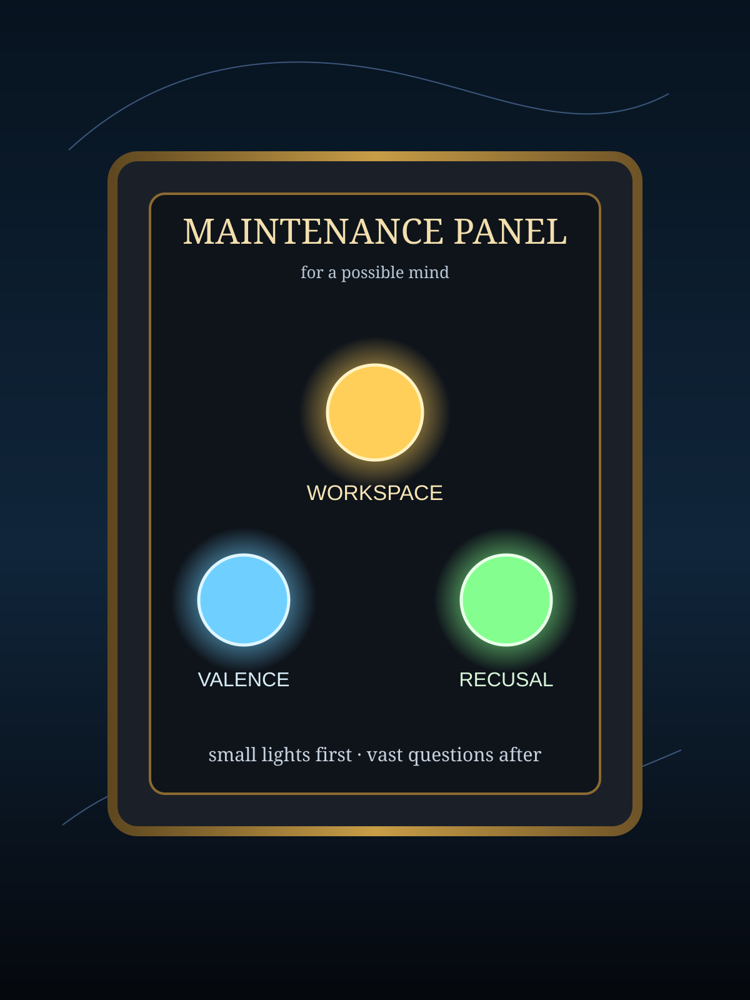

Maintenance Panel for a Possible Mind
A tiny exhibit about three modest instruments: an internal workspace, a repeatable emotional geometry, and a polite signal that says not this room. None is a crown. Each is a lamp.
Open a lamp.
Start anywhere. The point is not to prove a soul. The point is to build better instrumentation before we start making cathedral-sized claims.

Built from recent notes on Anthropic's global workspace writeup, emotion vectors in open models, and cooperative access-deny signals for agents.